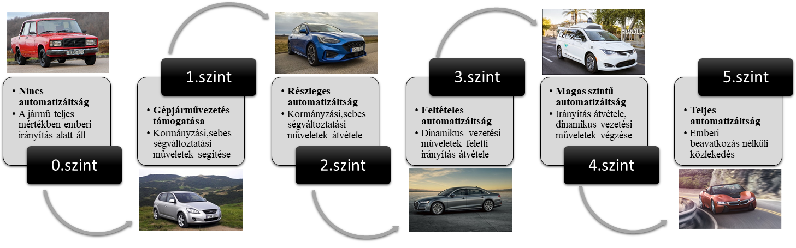

Ötös szintű járművel találkozhatunk az amerikai utakon. A világon elsőként ugyanis a Nuro cég
kapta meg az engedélyt az amerikai közlekedésbiztonsági hivataltól (NHTSA) a sofőr nélküli
áruszállító közúton való közlekedésére. Az R2 névre elkeresztelt kis tehergépek az átlagos autókkal
ellentétben nem embereket, hanem élelmiszereket szállítanak rövid távon, az áruházaktól az otthonokig.
Egy alkalmazáson keresztül a vevő megrendeli a kívánt árucikkeket, a boltnál bepakolják
a járműbe, ami elszállítja a megadott címre. Érkezést követően a megrendelő kiveszi az általa
megvásárolt tételeket és Nuro halad tovább a következő állomásra. Maximális sebessége 25 mérföld/óra.
A különböző kamerákat, érzékelőket és LIDAR-t a tetőre szerelt konzolba rejtették. A jármű hozzávetőleg a
Toyota Highlander magasságával rendelkezik, széltében azonban csak fele annak, hogy könnyebben tudjon manőverezni.